骨學
脊椎
thoracic vertebrae
 ### Lumbar vertebrae {#lumbar-vertebrae }
### Lumbar vertebrae {#lumbar-vertebrae }
 ## Sternum {#sternum }
- jugular notch
- manubrium
- sternal angle
- xiphoid process
## Sternum {#sternum }
- jugular notch
- manubrium
- sternal angle
- xiphoid process
Clavicle
看Groove分左右
- Trapezoid line
- coronoid tubercle
Ribs
- Costal tubercle
- Costal groove
- Articular facets
- Floating ribs
Tip
- 1st, 2rd, 11th, 12th的facet 只有一個
- 1st 的上1表面凹凸不平（Subclavian a./v. grooves, Ant./ Mid. scalene)
- 下緣有costal groove 較扁
Scapula
- Coracoid process
- Acromion
- Suprascapular notch
- Glenoid process
Pelvis
性別差異

Ilium
- Greater sciatic notch
- Iliac crest
- Ant. sup. iliac spine
Pubis
- Pubic symphysis
- Pubic crest
- Pubic tubercle
Ischium
- Ischial spine
 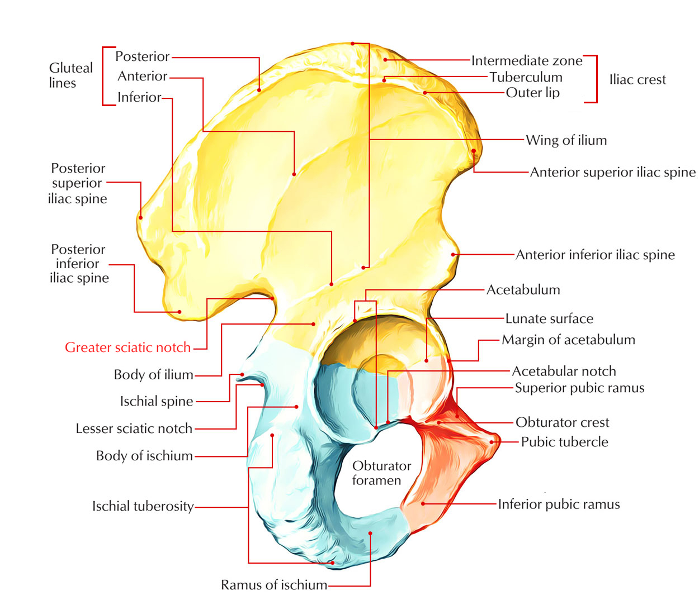
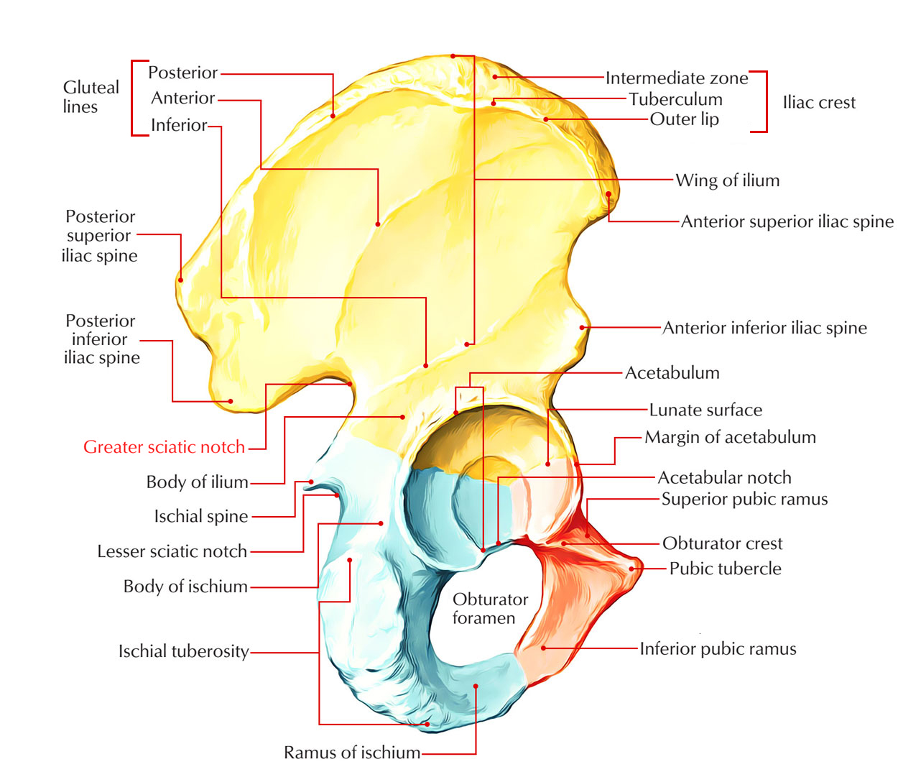
Upper limbs
Humeral
- lesser tubercle
- Intertubercular groove
- greater tubercle
- Deltoid tuberosity
- Med. epicondyle of humerus
- trochanter
- coronoid fossa
- Lat. epicondyle of humerus
- Olecranon fossa
 ### Ulna {#ulna }
分辨左右看radial notch
- coronoid process
- Olecranon
- radial notch
- styloid process
### Radius {#radius }
- radial tuberosity
- ulnar notch
- styloid process
### Ulna {#ulna }
分辨左右看radial notch
- coronoid process
- Olecranon
- radial notch
- styloid process
### Radius {#radius }
- radial tuberosity
- ulnar notch
- styloid process
 ### carpi {#carpi }
- pisiform bone
### carpi {#carpi }
- pisiform bone
Lower limbs
Femur
上端往外往後繞：
- Lesser trochanter
- Intertrochanteric line
- Greater trochanter
- Intertrochanteric crest
下端內而外繞：
- Adductor tubercle
- Med. epicondyle
- Med. condyle
- Patellar surface
- Intercondylar notch （背面）
- Lat. condyle
- Lat. epicondyle
- Fovea capitis
- Gluteal tuberosity
Patella
- Base
- Apex
- facet for lat. /med. condyle of femur
上肢
Axilla
## Axillary a. {#axillary-a } - Axillary a. - Axillary v. - Sup. thoracic a. - Thoracoacromial trunk - Clavicular br. - Acromial br. - Deltoid br. (Cephalic v. 伴行) - Pectoral br. - Lat. thoracic a. - Subscapular a. - Circumflex scapula a. - Thoracodorsal a. - Ant./Post. circumflex humeral a. - axillary n. 伴行 - Brachial a. ```mermaid flowchart TB subgraph 1[Part 1] st[Sup. thoracic a.] end subgraph 2[Part 2] tc[Thoracoacromial a.] lt[Lat. thoracic a.] end subgraph 3[Part 3] ac[Ant. humeral circumflex a.] pc[Post. humeral circumflex a.] sc[Subscapular a.] end ```Brachial plexus
- Long thoracic n.(前距肌表層)
- lateral cord
- lateral pectoral nerves
- medial cord
- medial pectoral nerves(穿過 pectoralis minor)
- medial cutaneous nerve of the forearm
- medial cutaneous nerve of the arm
- posterior cord
- subscapular nerves (x3)
- musculocutaneous n.
- median n.
- ulnar n.
- axillary n.(穿出Quadrangular)
- radial n.
Tip
- Cords 在 Pectoralis minor下
- M型

- Post. cord 走在 Subscapular m. 後面
flowchart LR
subgraph Roots
C5 & C6 & C7 & C8 & T1
end
subgraph Trunks
Superior & Middle & Inferior
end
subgraph Cords
Lat. & Post. & Med.
end
subgraph Terminal br.
r[Radial n.]
a[Axillary n.]
m[Median n.]
u[Ulnar n.]
mu[Musculocutaneous n.]
end
C5 & C6 & C7 -->ltc[Long thoracic n.]
C5 & C6--> Superior
C7-->Middle
C8 & T1-->Inferior
Superior & Middle-->Lat. & Post.
Inferior-->Post. & Med.
Post. ===> a & r
Lat. ===> mu & m
Med. ===>m & u
Med. -->mpn[Med. pectoral n.]
Lat. -->lpn[Lat. pectoral n.]
Post. --> sn1[Upper<br>subscapular n.] & td[Thoracodorsal n.] & sn2[Lower<br>subscapular n.]

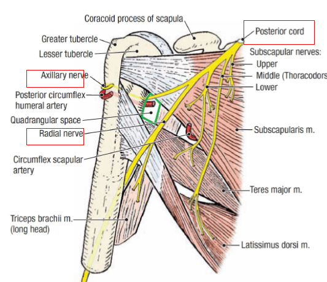
Arm
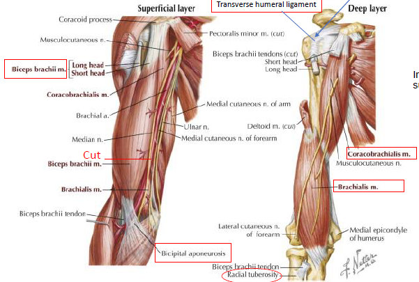 ## Muscle {#muscle } - Biceps brachii m. - Long head - Short head (到喙突) - Bicipital aponeurosis (斷) - Coracobrachialis m. - Brachialis m.(musculocutaneous n.躺在上面)Nerve
- Musculocutaneous n.
- Lateral cutaneous nerve of the forearm
- Median n.
- Ulnar n.
- Post. cord
- medial cutaneous n. of the forearm
Artery
- Brachial a.(Median n.伴行，到Cubital fossa 分支)
- Radial a.
- Ulnar a.
- Deep a. of arm
- Radial collateral a. Radial recurrent a.
- Sup. ulnar collateral Post. ulnar recurrent
被 medial epicondyle of humerus 隔開 - Inf. ulnar collateral Ant. ulnar recurrent

Cubital fossa
 ==Medial epicondyle of humerus==
==Medial epicondyle of humerus==
Forearm
 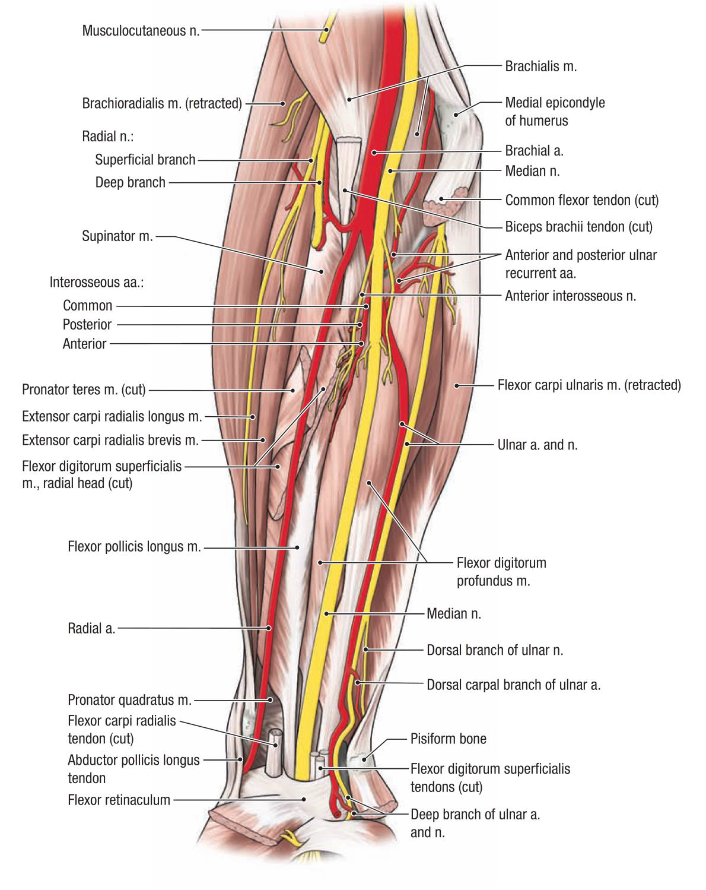
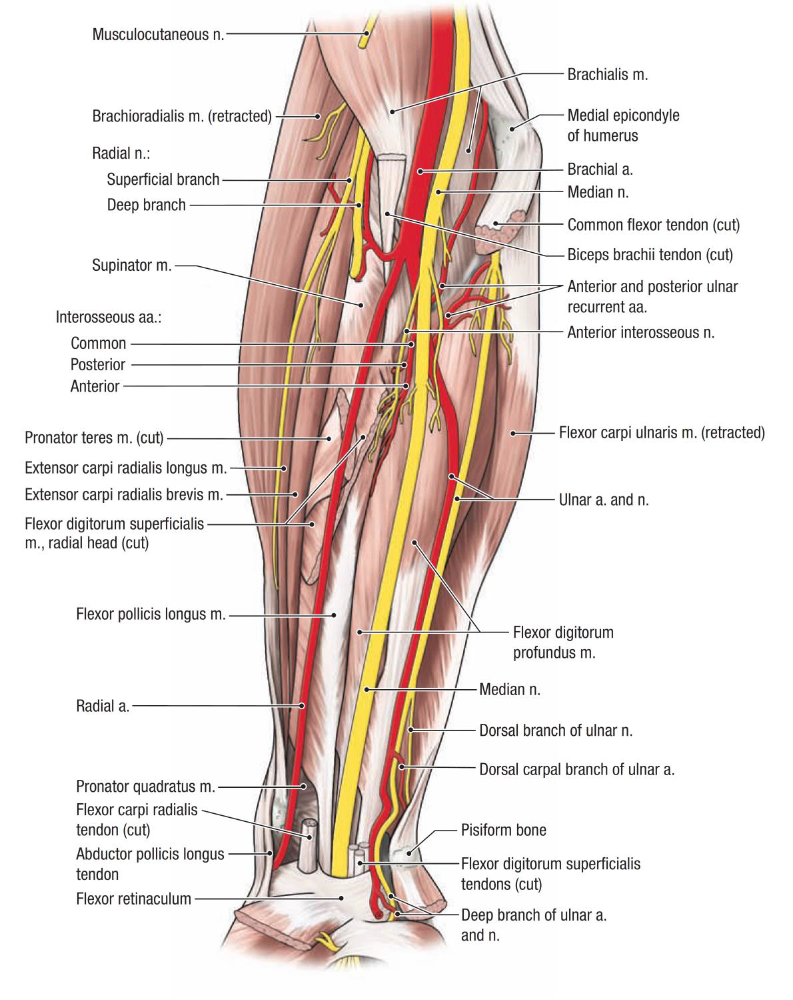
Muscle
第一層由內而外
- Flexor carpi ulnaris m.
- palmaris longus m.(斷)
- Flexor carpi radialis m.(斷)
- Pronator teres m.
- Brachioradialis m.
第二層由內而外
- Flexor digitorum profundus m.
- Flexor digitorum superficialis
- Flexor pollicis longus m.
最深
- Pronator Quadratus
Artery/ nerve
- Ulnar a./ n.
- Common interosseous a./ n.(深層，鑽入屈指深, 屈拇長之間)
- Post. a.
- Ant. a./n.
- Dorsal br. of ulnar a./ n.
--------- pisiform bone ------------ - Deep br. of ulnar a./ n.
- Common interosseous a./ n.(深層，鑽入屈指深, 屈拇長之間)
- Median n.
- Radial a.
- Radial n.
- Deep br.
- Superficial br.
Vein
- Basilic v.
- Median cubital v.
- Cephalic v.

Carpi
由外而內：
- Tendon of abd. pollicis longus m.
- Redial a.
Carpal tunnel
- Tendon of flexor carpi radialis
- Median n.
- Tendon of palmaris longus m.
- Tendons of flexor digitorum superficialis(斷)
- Tendons of flexor digitorum profundus(斷)
- ulnar a./ n. (Carpal tunnel 外)
- Tendon fo flexor carpi ulnaris

Palm
Thenar
- Thenar m.
- Abd. pollicis brevis m.
- Flexor pollicis brevis m
- Opponens pollicis m.
- Hypothenar m.
- Abd. digiti minimi m.
- Flexor digiti minimi brevis m.
- Opponens digiti minimi m.
Superficial
- Palmaris brevis m.
- Palmar aponeurosis
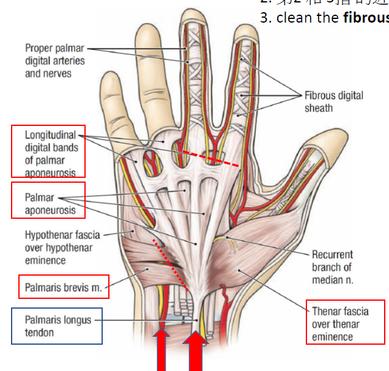
- Flexor retinaculum (斷)
- Tendons of Flexor digitorum superficialis
- Tendons of Flexor digitorum profundus(穿出 superficialis的tendons)
- Median n.
- recurrent br.
- Common digital n.
- Superficial palmar arch
- common palmar digital a.
common palmar digital br.
proper palmar digital br. - proper palmar digital a.
- common palmar digital a.
- Superficial br. of ulnar n.
- palmar br.
- Deep br. of ulnar n./ Palm br. of ulnar a.(過pisiform m. 後分支)
Deep
- add. pollicis muscle
- Deep palmar arch
- Lumbrical m.(附在 profundus)
- Palmar interosseous muscles
- Dorsal interosseous muscles


胸淺層
 - Pectoralis major/ minor
- Serratus anterior m.
- Cephalic v.
- Subclavian m. (鎖骨下 $\rightarrow$ 1st rib)
- Pectoralis major/ minor
- Serratus anterior m.
- Cephalic v.
- Subclavian m. (鎖骨下 $\rightarrow$ 1st rib)
乳房
- Nipple
- Areola
- Suspensory lig.(片狀)
- Lactiferous sinus(乳暈下方囊狀,duct末端)
- Lactiferous duct
Ant. thoracic wall

Vessels
- internal thoracic a .
- pericardiacophrenic a.(斷)
- intercostal a.
- musculophrenic a.
- sup. epigastric a.
- collateral a.
flowchart LR
ic[Internal<br>thoracic a.]
ac[Ant. intercostal]
ic-->ac--->6[rib 1-6]
ic-->cm((costal<br>margin))
cm-->m[Musculophrenic a.]-->7[rib 7-9]
cm-->se[Sup.<br>epigastric a.]-->r[rectus abdominis]
ic-->p[pericardiacophrenic a.]-- 伴行--->pn[Phrenic n.]

Nerve
- Intercostal n.
- Intercostobrachial n. (T2)
不分Ant./Post.
- Intercostobrachial n. (T2)
 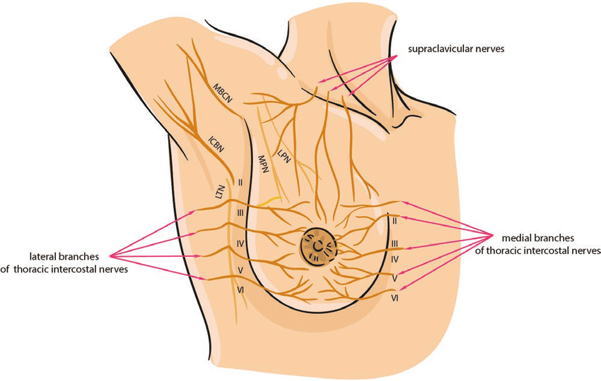
> ICBN indicates intercostobrachial nerve
> LTN, long thoracic nerve
> LPN, lateral pectoral nerve
> MBCN, medial brachial cutaneous nerve
> MPN, medial pectoral nerve.
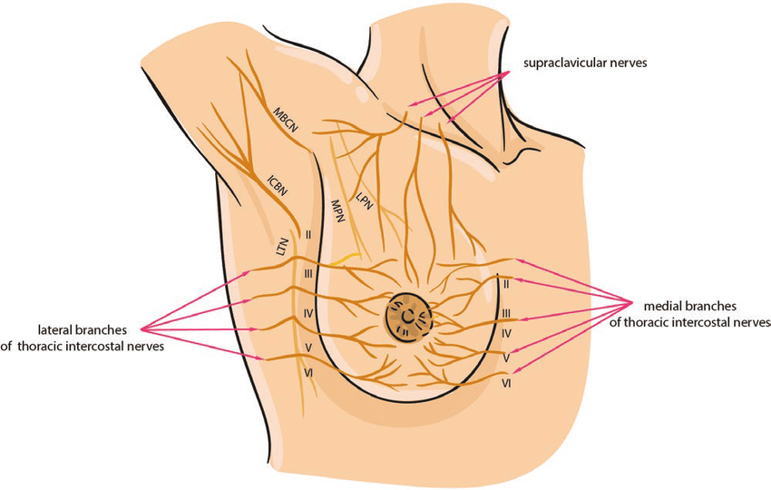
> ICBN indicates intercostobrachial nerve
> LTN, long thoracic nerve
> LPN, lateral pectoral nerve
> MBCN, medial brachial cutaneous nerve
> MPN, medial pectoral nerve.
Muscle
- external intercostal m.
- internal intercostal m.
- innermost intercostal m.
- transversus thoracis m.
Tip
肋骨中段才有Innermost
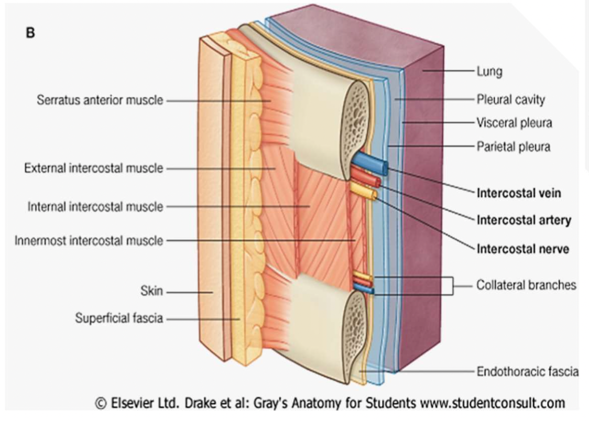
Thoracic cavity
## Structure {#structure } - R. lung - sup. lobe - middle lobe - inferior lobe - L. lung - sup. lobe - lingula - cardiac notch - inf. lobe - costodiaphrag-matic recess
info{costodiaphrag-matic recess}

:::
:::
CT
-
Parietal pleura（黏在前胸壁上）
- costal
- mediastinal
- diaphragmatic
-
Fibrous pericardium
-
Serous pericardium
- Parietal pericardium
- Pericardial cavity
- Visceral pericardium（黏在心臟上）
-
Ligamentum arteriosum

Vessels
- Ascending aorta
- Aortic arch
- Brachiocephalic trunk
- L. common carotid a. v.
- L. subclavian a. v.
- SVC
- IVC
- Pulmonary trunk
- Pulmonary a.
- Pulmonary v.
Nerve
- Vagus n.
- Recurrent laryngeal n.
- Phrenic n.
(走在心臟外側)
Posterior Mediastinum


 ## Nerve {#nerve-3 }
- esophageal plexus
- L./R. vagus n. (伴隨 esophagus進腹腔)
- L./R. Sympathetic trunk
穿過diaphragm
- Greater splanchnic n.
- Lesser splanchnic n.
- Intercostal n.
## Vessels {#vessels-2 }
- Thoracic aorta
- IVC
- Azygos arch
- Azygos v.
- Accessory hemiazygos v.
- Hemiazygos v.
- post. intercostal a./v.
## Nerve {#nerve-3 }
- esophageal plexus
- L./R. vagus n. (伴隨 esophagus進腹腔)
- L./R. Sympathetic trunk
穿過diaphragm
- Greater splanchnic n.
- Lesser splanchnic n.
- Intercostal n.
## Vessels {#vessels-2 }
- Thoracic aorta
- IVC
- Azygos arch
- Azygos v.
- Accessory hemiazygos v.
- Hemiazygos v.
- post. intercostal a./v.
Azygos system
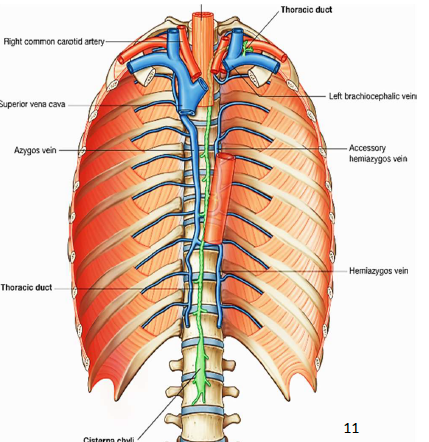Others
-
Trachea
- Primary bronchus(右側較短、直)
-
Thoracic duct (壓在esophagus 右後方，Azygos v., thoracic aorta 之間)
Diaphragm
上表面
- Phrenic n.
- pericardiacophrenic a./ v.
- internal thoracic a.
- Musculophrenic a./v. (供應diaphragm)
- sup. epigastric a.
- thoracic aorta
- Sup. phrenic a./ v. (供應diaphragm)

下表面
Structure
- Lat. arcuate ligament
- 包 Quadratus lumborum m.
- Med. arcuate ligament
- 包 psoas major
- Left crus (to L2)
- Median arcuate ligament
- Right crus (to L3)
- central
Vessels
- Phrenic n.
- Intercostal n.
- Inf phrenic a.

下肢
Abdominal
 ## Muscles {#muscles }
- external oblique m.
- inguinal ligament
- superficial inguinal ring
- internal oblique m.
- transversus abd. m.
- deep inguinal ring
- rectus abdominis m.
- tendinous intersection
- rectus sheath
- anterior layer
- posterior layer
- arcuate line
## Muscles {#muscles }
- external oblique m.
- inguinal ligament
- superficial inguinal ring
- internal oblique m.
- transversus abd. m.
- deep inguinal ring
- rectus abdominis m.
- tendinous intersection
- rectus sheath
- anterior layer
- posterior layer
- arcuate line
tendinous intersection

Vessels
Rectus abdominis下
- Lat. umbilical fold
- sup. epigastric a./ v.
- inf. epigastric a. & v.

Abdominal aorta
- Celiac trunk
- Sup. mesenteric a.
- Inf. mesenteric a.

Nerve
- T7-11 intercostal n. (10:肚臍)
- subcostal n. (T12)
- iliohypogastric n. (L1)
- ilioinguinal n. (L1)

Urogenital triangle
男性
- Bulbospongiosus muscle(球狀海綿體肌)
- Ischiocavernosus muscle(坐骨海綿體肌)
- Superficial transverse perineal m.
- Internal pudendal a./ Pudendal n.
- corpus cavernosum(陰莖海綿體)
- corpus .(尿道海綿體)
- Dorsal a./ n. of penis
- Deep dorsal v./a./n. of penis

女性
- Ischiocavernosus muscle(坐骨海綿體肌)
- Deep branch of perineal n./ a.
- Superficial branch of perineal n./ a.
Thigh
CT
- Fascia lata
- Crural fascia
- Inguinal ligament
Muscle
前側、外側
- Iliopsoas
- Psoas major
- Iliacus
- Tensor fasciae latae
- Iliotibial Band
- Sartorius
- Quadriceps femoris
- Vastus lateralis
- Rectus femoris
- Vastus medialis
- Vastus intermedius
內側
- Gracilis m.
- Adductor
- longus(斷)
- magnus
- brevis
- Pectineus m.(斷)
- Obturator ext. m.
Tip
Anterior body of pubis是gracilis, longus, brevis的Origin

Vessels
- Femoral a./ v.
- Deep Femoral a.
- Medial circumflex femoral a.(Pectineus 後)
- Lateral circumflex femoral a.(Rectus femoris m.下)
- Ascending
- Transverse
- Descending
- Perforating br.
- Great saphenous v.

Nerve
- Obturator n. (支配Adductor)
- Ant. br.
- Post. br.
- Femoral n.
- Saphenous n.
- Cutaneous nerves:
- Lat. femoral cutaneous n.
- Ant. cutaneous br. of the femoral n.
- Cutaneous br. of obturator n.
- Cutaneous br. of superficial fibular n.
Tip
Obturator nerve的 Ant./Post.被brevis分開
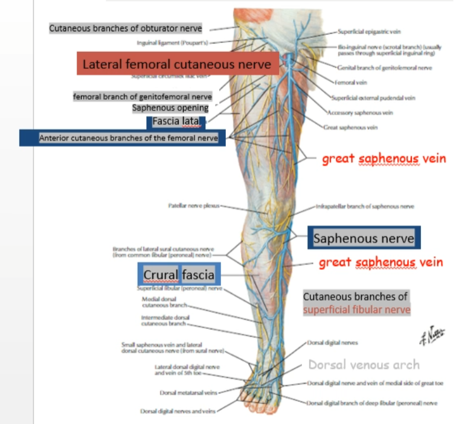
Limb
 ## CT {#ct-2 }
- crural fascia
- superior retinaculum
- inferior retinaculum
- superior fibular retinaculum
- inferior fibular retinaculum
## CT {#ct-2 }
- crural fascia
- superior retinaculum
- inferior retinaculum
- superior fibular retinaculum
- inferior fibular retinaculum

Vessels
- Great saphenous v. (繞到膝蓋後再繞到前側)
- Ant. tibial a.
- Ant. tibial recurrent a.
- Ant. med. Malleolar a.
- Ant. lat. Malleolar a.
- Dosalis pedis a.
- Post. tibial a.
- Fibular a.
flowchart TB
F[femoral a.]-->Pp[popliteal a.]-->ah((adductor<br>hiatus))
ah-->pt[Post. tibial a.]
pt-->f[Fibular a.]-->t[小腿外側]
ah-->at[Ant. tibial a.]
at-->atr[Ant. tibial<br>recurrent a.]-->k[Knee]
at-->m[Malleolar a.]
at-->d[Dosalis pedis]

Nerve
- Saphenous n.
- Common fibular n.
- late. sural cutaneous n
- superficial fibular n.
- medial dorsal cutaneous br.
- intermediate dorsal cutaneous br.
- Deep fibular n. (Ant. tibial a.伴行)
- Recurrent br. of deep fibular n.
Tip
common fibular n. 傳到 Fibularis longus下再分支
flowchart TB
si[Siatic nerve]
p((popliteal))
cf[Common fibular]
si-->p-->cf
cf-->lsc[lat. sural cutaneous n.]
cf-->sf[Superficial fibular n.]
sf-->mc[medial dorsal cutaneous br.]
sf-->ic[intermediate dorsal cutaneous br.]
cf-->df[Deep fibular n.]
Muscle
- Fibularis longus m.
- Fibularis brevis m.
- Fibularis tertius m.
- Extensor hallucis longus m
- Extensor digitorum longus m.
- Tibialis ant. m.


Dorsum
表層
- Greater saphenous v.
- Small saphenous v.
- dorsal venous arch
- Superficial Fibular n.

深層
由內而外(Extensor retinaculum之下)
- Tibialis anterior tendon
- Extensor hallucis longus tendon
- Ant. tibial a./ v.
- Deep fibular n.
- Extensor digitorum longus tendons
- Fibularis tertius tendons

Artery/ Nerve
- Ant. tibial a./ Deep fibular n.
- Med. tarsal a.
- Lat. tarsal a./ Lat. br. of deep fibular n.
- Dorsalis pedis a.
- Arcuate a.
- Dorsal metatarsal a.
- Dorsal digital a.
Muscle
- extensor digitorum brevis
- extensor hallucis brevis